^O Reino das Tebras^
 Aventureir@s sodes benvid@s a Kallaikia ^O Reino das Tebras^, disfruta da máis grande aventura épica xamáis contada completamente en Galego, explora as nosas incríblemente fermosas, fogareñas e tebrosas terras. Viaxa dende o Castro de Brigantia, a primeira capital de Galiza, ata a conquista de Eire, máis alá do horizonte ... ao Norte do Mar Cantábrico, só visible dende o máis alto da esplendorosa Torre de Ith ... Tal como se narra no Leabhar Ghabhála Érenn: "O Libro das Invasións Irlandesas", escrito no século XI nas illas do Norte ...